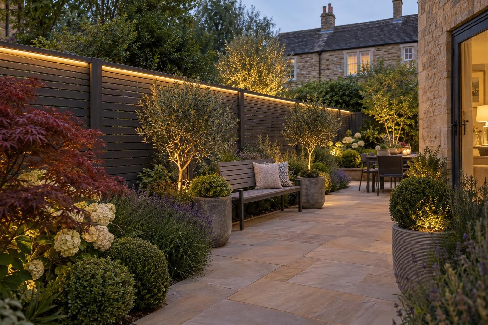

Fencing in Weldon
Closeboard, composite and aluminium slatted fencing in Weldon, on posts set properly in concrete.
Closeboard timber fencing typically costs £80–£100 per metre supplied and fitted on concrete posts. Composite and aluminium slatted fencing starts from about £240 per metre fitted at 1.8m high. Taking out the old fence is priced on the visit. A fence, wall or gate is normally permitted development up to 2m high, or 1m where it sits next to a road or footpath used by vehicles.
- Closeboard, fitted
- £80–£100 per metre
- Planning
- Not needed up to 2m (1m by a road)
- Ground
- Limestone and ironstone; variable
- Guarantee
- 5 years, in writing
Our 2026 guide prices, all in. Your fixed price comes in writing after the site visit. Council fees checked October 2026.
Fencing in Weldon: what is involved
We put up closeboard timber fencing on concrete posts with gravel boards, and premium composite and aluminium slatted fencing on aluminium posts, with matching gates and screens.
Weldon is an old stone village on the east side of Corby, famous for Weldon stone, the limestone quarried here for centuries. Its historic centre of stone houses is surrounded by later estates that now join it to Corby.
We cover Weldon (NN17) and the villages around it, including Great Oakley, Little Oakley, Deene, Brigstock and Stanion.
Ground and conservation in Weldon
Weldon sits over the limestone and ironstone that were quarried here, and ground can change from natural rock to clay or fill within a garden. The Willow Brook runs past the village, so drainage needs designing rather than assuming. Ground in Weldon can change within a single garden, so we dig the first post hole as a trial and set the depth of every footing from what we find.
Weldon has a conservation area covering the historic village, appraised in 2009. North Northamptonshire has no Article 4 direction in Weldon affecting driveways, porches or extensions.
Sources: Weldon conservation area (Northamptonshire HER) · North Northamptonshire conservation areas.
Permissions in Weldon
- PlanningA fence, wall or gate is normally permitted development up to 2m high, or 1m where it sits next to a road or footpath used by vehicles. Listed buildings need consent, and some estates have planning conditions on front boundaries. Listed buildings and the Weldon conservation area have tighter rules, so we check your address before anything is designed. Planning Portal: fences, gates and walls
- TreesTrees in a conservation area need six weeks' notice before work, and protected trees need consent; both are free. North Northamptonshire: tree protection
- Design and priceWe measure up, check the ground and the planning position, and give you one fixed written price.
Rules checked October 2026.
What you get
- Concrete or aluminium posts set in concrete at the right depth
- Gravel boards so timber never sits in the soil
- Composite and aluminium slatted panels that never need painting
- Matching gates, privacy screens and LED-lit capping
The specification
- Old fence taken down and away
- Post holes dug to depth and posts set in concrete
- Gravel boards fitted along the run
- Panels or boards fixed and capped
- Gates hung and latched
- Five year workmanship guarantee in writing

“Really pleased with my new driveway. Beautifully finished, friendly professional workmen, would definitely recommend and will be using them again for the garden once other renovations complete.”
Driveway — Google review
“Absolutely great guys, job was done in good time and looks brilliant. No complaints, the driveway is immaculate. More work in the near future, thanks again!”
Driveway — Google review
Everything else we do here


Fencing in Weldon: questions
How much does a fence cost in Weldon?
Do I need planning permission for a fence in Weldon?
Does the ground in Weldon make a difference?
How high can my fence be?
Composite or timber?
Request a site visit in Weldon
We measure up, check levels and drainage, and send a written proposal with the build-up, the programme and one whole price. No pressure and no follow-up sales calls.